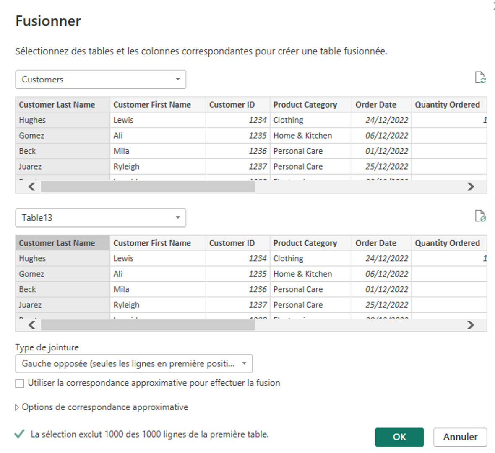
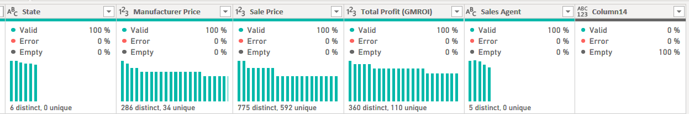
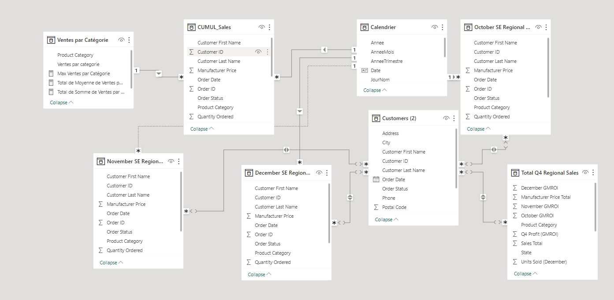
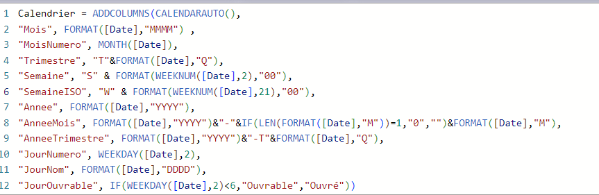
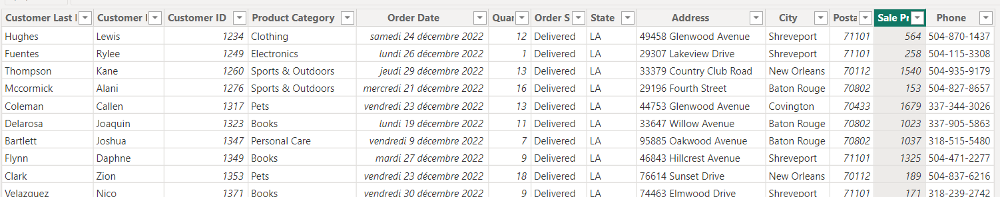
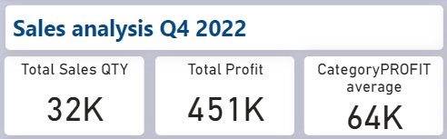
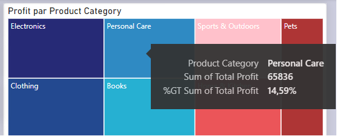

DAnalytics Insight
DAnalytics Insight
Création Dashboard des ventes Power BI
Le projet de création d'un tableau de bord des ventes avec Power BI vise à offrir une vue exhaustive et dynamique des performances commerciales d'une entreprise. En combinant la puissance de Power BI, un outil de visualisation de données de pointe, avec les données de ventes pertinentes, ce projet vise à vous illustrer la possibilité de créer le tableau de bord qui permettra de consolider et de présenter les données de ventes de manière claire et interactive pour des décisions commerciales plus éclairées et stratégiques.
L’objectif
L’exemple de projet l’analyse de vente avec la création de Dashboard . L'objectif d'un tableau de bord est de visualiser d'un seul coup d'œil les indicateurs clés de performance . et les résultats les plus importants. Les tableaux de bord sont un moyen interactif de voir comment l'entreprise ou le projet fonctionne. Ici je réalise un Dashboard pour le directeur commercial qui analyse les données de ventes au détail d’articles vendus dans plusieurs régions. Les mesures comparent les performances de 4 trimestres.
Les Données
Ce Dataset comprend des fichiers des ventes provenant d’un ERP d’une entreprise. Les données fournies, ce sont des ventes de 4 trimestres de 2022. On y retrouve les ventes d’Octobres à décembre 2022, les ventes par catégorie de produit et l’information sur nos clients. Afin de pouvoir analyser les données, le nettoyage des données dans un Editeur Powe Query .
Observation des données
Les données ont 10 tables :
- Table3
- Table1
- Table134
- Table15
- Table15
- Customers
- December SE Regional Sales
- November SE Regional Sales
- October SE Regional Sales
- Total Q4 Regional Sales
Après l’analyse, on peut voir qu’il y a les tables avec les données similaires P.ex. Table 13 et Customers/Table 15 et Novembre SE Régional Sales / Table 1 et Décembre SE Régional Sales/ Table 156 et Octobre SE Régional Sales/ Table 134 et Total Q4 Regional Sales Grace a fonction de fusion, on peut constater qu’il n’a pas de différence entre 2 tables :
Dans Power Query grâce à outil transformation des données, nous avons la possibilité de voir la qualité des donnés et procédé au nettoyage si besoin, par exemple remplacement des valeur manquantes, suppression les colonne inutiles :
Modélisation des données
La modélisation des données est le processus d’analyse et de définition de toutes les données distinctes entre les tables. La création des relations entre les différentes tables est possible dans la vue-modèle :
Analyse des données
Dans notre scénario, nous souhaitons analyser les indicateurs classiques liés aux ventes, comme le chiffre d’affaires, la marge, etc. De plus, nous souhaitons aussi analyser le comportement des clients lors des opérations d’achats et l’évolution des ventes dans le temps. Pour ces raisons je crée les tables s supplémentaires :
- Calendrier : c’est la table de dates. Il s’agit d’une table de dimensions. Elle servira aux analyses temporelles. (utilisation CALENDARAUTO()) 
- Clients : nous avons la table Customers soit une table de dimension, elle servira de support à des analyses du comportement des clients. 
Création des Mesures
L’étape importante est création des mesures nécessaire pour note analyse, l'utilisation de mesures dans Power BI est essentielle pour transformer les données brutes en informations exploitables, personnalisées pour l’entreprise. Elles nous permettent de créer des rapports dynamiques, de suivre la performance de votre entreprise et de prendre des décisions éclairées en fonction des données. Beaucoup de calculs courants sont disponibles en tant que mesures rapides, sinon nous avons la possibilité de créer les mesures plus complexes à l’aide de DAX. Dans notre Dashboard, les mesures importantes sont :
- Calcule de rentabilité :
TotalProfit = SUM('CUMUL_Sales'[Sale Price]) - SUM('CUMUL_Sales'[Manufacturer Price ]) - Filtrage de mois :
Profit Month = CALCULATE( SUM(CUMUL_Sales[Total Profit (GMROI)]), 'Calendrier'[Mois] ) - Filtrage de rentabilité par catégorie :
CategoryProfit = AVERAGEX( KEEPFILTERS(VALUES('CUMUL_Sales'[Product Category])), CALCULATE(SUM('CUMUL_Sales'[Total Profit (GMROI)])) ) - Possibilité de filtrer des ventes par Agent ou régions :
Brian Profit = CALCULATE( SUM(CUMUL_Sales[Total Profit (GMROI)]), ' CUMUL_Sales '[Sales Agent] = "Brian" )
Création du Dashboard
- Choix de thème, couleurs et style
- Identification et calcules des KPIs :
- La quantité de vent par mois
- Le total de bénéficesFelis enim feugiat.
- Intégration des filtres pour faciliter la navigation (Mois, agent, catégorie) 
- Dans l’objectif de trouver les catégories le plus rentable je réalise treemaps Profit par Catégorie Treemap permet d’une part de comparer des quantités de manière très directe et efficace et d’autre part de faire émerger les tendances qui structurent nos données :
- Définition des objectifs de ventes et l’affichage l’évolution grâce Création d’un indicateur de performance clé
- Création d’un table ventes par catégories :
Ventes par Catégorie = SUMMARIZE('Total Q4 Regional Sales', 'Total Q4 Regional Sales'[Product Category], "Ventes totales", SUM('Total Q4 Regional Sales'[Sales Total]) ) - Ici je pars sur l’objectif de vente max vente par catégorie :
MAX_Category_Sales = Max Ventes par Catégorie = MAXX('Ventes par Catégorie', [Ventes par categorie]) - Total de Moyenne de Ventes par catégorie :
CALCULATE( AVERAGE('Ventes par Catégorie'[Ventes par categorie]), ALLSELECTED('Ventes par Catégorie'[Product Category]) ) - Deffinition des objectifs des ventes : Ici je prends le cible comme max vente (mais l’idée est de créer la carte de performance et avec le cible p.ex. ventes l’année précédant+ 10 % ) par catégorie et le valeur la moyenne de vente :

- Création d’un table ventes par catégories :
- L’observation des tendances des ventes par semaine, mois :
- La performance de chaque agent
Pour le directeur commercial il est important de voir la rentabilité de chaque agent :

Le plus performante est Priscilia avec 104K de bénéfice. Grace à filtre nous avons l’info plus détaillé :

- L’identification des relations entre pris et les bénéfices grâce à graphiques à nuages de points
Ici les ventes par catégories restent similaires entre 13-16%.

Si les bénéfices par mois restent stable 150 K , nous pouvons observer la baisse les dernières semaines de mois. Nous avons la possibilité de filtrer ce graphique par l’ agent ou la catégorie


C’est un outil puissant pour analyser la relation entre les prix et les bénéfices, permettant ainsi aux entreprises de prendre des décisions éclairées en matière de tarification, de gestion des coûts et de stratégie commerciale. Ils fournissent une représentation visuelle des données, ce qui facilite la compréhension des tendances et des modèles, et aide à identifier les zones d'amélioration et d'opportunité. Ici, on observe la dépendance directe entre prix et les bénéfices les ventes apportent plus avec le prix entre 1200 et 1700 €.
Le résultat

Ce tableaux de bord est un exemple, comment c’est possible de découvrir facilement les bonnes informations. Vous pouvez appliquer vous-même des filtres et consulter différents graphiques. En disposant immédiatement des bonnes informations, des décisions correctes peuvent être prises. Ce Dashboard est un petit exemple comment les données puisse aide à un directeur commerciale dans la prise de décisions stratégiques et opérationnelles visant à améliorer les performances de l'entreprise. Voici quelques raisons pour lesquelles l'analyse des ventes est importante pour un directeur commercial :
- Prise de décision éclairée : L'analyse des ventes fournit des données quantitatives sur les performances passées et actuelles de l'entreprise. Cela permet au directeur commercial de prendre des décisions basées sur des faits plutôt que sur des conjectures.
- Évaluation de la performance : Les analyses des ventes permettent de suivre et d'évaluer la performance des équipes de vente, des catégories, des canaux de distribution, des territoires, etc. Cela aide à identifier ce qui fonctionne bien et ce qui doit être amélioré.
- Identification des tendances : En examinant les données de vente sur une période donnée, le directeur commercial peut identifier les tendances de croissance ou de déclin. Cela lui permet de réagir rapidement aux changements du marché.
- Optimisation des ressources : L'analyse des ventes peut aider à allouer les ressources, y compris le personnel, de manière plus efficace. Par exemple, en identifiant les territoires ou les produits les plus performants, le directeur commercial peut ajuster les affectations et les priorités.
- Tarification et stratégie de produits : Les données de vente fournissent des informations sur la manière dont les clients réagissent aux prix et aux produits. Le directeur commercial peut ajuster la tarification et la stratégie de produits en fonction de ces informations.
- Gestion des stocks : Une analyse des ventes permet de mieux gérer les niveaux de stock en identifiant les produits qui se vendent rapidement et ceux qui stagnent. Cela réduit les coûts liés au stockage excessif.
- Gestion des clients : En analysant les données de vente, le directeur commercial peut identifier les clients les plus rentables et les plus fidèles. Cela peut orienter les efforts de fidélisation et de gestion des comptes.
- Prévisions de ventes : L'analyse des ventes aide à établir des prévisions de ventes plus précises, ce qui est essentiel pour la planification des ressources, la gestion de la chaîne d'approvisionnement et la budgétisation.
- Suivi de la concurrence : L'analyse des ventes permet de comparer les performances de l'entreprise à celles de ses concurrents, ce qui peut révéler des opportunités et des menaces sur le marché.
- Amélioration de la rentabilité : En comprenant les marges bénéficiaires, les coûts de vente et d'autres facteurs liés aux ventes, le directeur commercial peut mettre en place des stratégies visant à améliorer la rentabilité de l'entreprise.
En résumé, l'analyse des ventes fournit des informations essentielles pour la gestion et la croissance de l'entreprise. Elle permet au directeur commercial de mieux comprendre le marché, d'optimiser les opérations et de prendre des décisions éclairées pour atteindre les objectifs de l'entreprise.
Lists
Unordered
- Dolor pulvinar etiam.
- Sagittis adipiscing.
- Felis enim feugiat.
Alternate
- Dolor pulvinar etiam.
- Sagittis adipiscing.
- Felis enim feugiat.
Actions
Pagination
Table
Default
| Name | Description | Price |
|---|---|---|
| Item One | Ante turpis integer aliquet porttitor. | 29.99 |
| Item Two | Vis ac commodo adipiscing arcu aliquet. | 19.99 |
| Item Three | Morbi faucibus arcu accumsan lorem. | 29.99 |
| Item Four | Vitae integer tempus condimentum. | 19.99 |
| Item Five | Ante turpis integer aliquet porttitor. | 29.99 |
| 100.00 | ||
Alternate
| Name | Description | Price |
|---|---|---|
| Item One | Ante turpis integer aliquet porttitor. | 29.99 |
| Item Two | Vis ac commodo adipiscing arcu aliquet. | 19.99 |
| Item Three | Morbi faucibus arcu accumsan lorem. | 29.99 |
| Item Four | Vitae integer tempus condimentum. | 19.99 |
| Item Five | Ante turpis integer aliquet porttitor. | 29.99 |
| 100.00 | ||
Buttons
Form
Image
Fit


Left & Right
 Morbi mattis mi consectetur tortor elementum, varius pellentesque velit convallis. Aenean tincidunt lectus auctor mauris maximus, ac scelerisque ipsum tempor. Duis vulputate ex et ex tincidunt, quis lacinia velit aliquet. Duis non efficitur nisi, id malesuada justo. Maecenas sagittis felis ac sagittis semper. Curabitur purus leo, tempus sed finibus eget, fringilla quis risus. Maecenas et lorem quis sem varius sagittis et a est. Maecenas iaculis iaculis sem. Donec vel dolor at arcu tincidunt bibendum. Interdum et malesuada fames ac ante ipsum primis in faucibus. Fusce ut aliquet justo. Donec id neque ipsum. Integer eget ultricies odio. Nam vel ex a orci fringilla tincidunt. Aliquam eleifend ligula non velit accumsan cursus. Etiam ut gravida sapien. Morbi mattis mi consectetur tortor elementum, varius pellentesque velit convallis. Aenean tincidunt lectus auctor mauris maximus, ac scelerisque ipsum tempor. Duis vulputate ex et ex tincidunt, quis lacinia velit aliquet. Duis non efficitur nisi, id malesuada justo. Maecenas sagittis felis ac sagittis semper. Curabitur purus leo, tempus sed finibus eget, fringilla quis risus. Maecenas et lorem quis sem varius sagittis et a est. Maecenas iaculis iaculis sem. Donec vel dolor at arcu tincidunt bibendum. Interdum et malesuada fames ac ante ipsum primis in faucibus. Fusce ut aliquet justo. Donec id neque ipsum. Integer eget ultricies odio. Nam vel ex a orci fringilla tincidunt. Aliquam eleifend ligula non velit accumsan cursus. Etiam ut gravida sapien.
Morbi mattis mi consectetur tortor elementum, varius pellentesque velit convallis. Aenean tincidunt lectus auctor mauris maximus, ac scelerisque ipsum tempor. Duis vulputate ex et ex tincidunt, quis lacinia velit aliquet. Duis non efficitur nisi, id malesuada justo. Maecenas sagittis felis ac sagittis semper. Curabitur purus leo, tempus sed finibus eget, fringilla quis risus. Maecenas et lorem quis sem varius sagittis et a est. Maecenas iaculis iaculis sem. Donec vel dolor at arcu tincidunt bibendum. Interdum et malesuada fames ac ante ipsum primis in faucibus. Fusce ut aliquet justo. Donec id neque ipsum. Integer eget ultricies odio. Nam vel ex a orci fringilla tincidunt. Aliquam eleifend ligula non velit accumsan cursus. Etiam ut gravida sapien. Morbi mattis mi consectetur tortor elementum, varius pellentesque velit convallis. Aenean tincidunt lectus auctor mauris maximus, ac scelerisque ipsum tempor. Duis vulputate ex et ex tincidunt, quis lacinia velit aliquet. Duis non efficitur nisi, id malesuada justo. Maecenas sagittis felis ac sagittis semper. Curabitur purus leo, tempus sed finibus eget, fringilla quis risus. Maecenas et lorem quis sem varius sagittis et a est. Maecenas iaculis iaculis sem. Donec vel dolor at arcu tincidunt bibendum. Interdum et malesuada fames ac ante ipsum primis in faucibus. Fusce ut aliquet justo. Donec id neque ipsum. Integer eget ultricies odio. Nam vel ex a orci fringilla tincidunt. Aliquam eleifend ligula non velit accumsan cursus. Etiam ut gravida sapien.
 Vestibulum ultrices risus velit, sit amet blandit massa auctor sit amet. Sed eu lectus sem. Phasellus in odio at ipsum porttitor mollis id vel diam. Praesent sit amet posuere risus, eu faucibus lectus. Vivamus ex ligula, tempus pulvinar ipsum in, auctor porta quam. Proin nec dui cursus, posuere dui eget interdum. Fusce lectus magna, sagittis at facilisis vitae, pellentesque at etiam. Quisque posuere leo quis sem commodo, vel scelerisque nisi scelerisque. Suspendisse id quam vel tortor tincidunt suscipit. Nullam auctor orci eu dolor consectetur, interdum ullamcorper ante tincidunt. Mauris felis nec felis elementum varius. Nam sapien ante, varius in pulvinar vitae, rhoncus id massa. Donec varius ex in mauris ornare, eget euismod urna egestas. Etiam lacinia tempor ipsum, sodales porttitor justo. Aliquam dolor quam, semper in tortor eu, volutpat efficitur quam. Fusce nec fermentum nisl. Aenean erat diam, tempus aliquet erat. Etiam iaculis nulla ipsum, et pharetra libero rhoncus ut. Phasellus rutrum cursus velit, eget condimentum nunc blandit vel. In at pulvinar lectus. Morbi diam ante, vulputate et imperdiet eget, fermentum non dolor. Ut eleifend sagittis tincidunt. Sed viverra commodo mi, ac rhoncus justo. Duis neque ligula, elementum ut enim vel, posuere finibus justo. Vivamus facilisis maximus nibh quis pulvinar. Quisque hendrerit in ipsum id tellus facilisis fermentum. Proin mauris dui.
Vestibulum ultrices risus velit, sit amet blandit massa auctor sit amet. Sed eu lectus sem. Phasellus in odio at ipsum porttitor mollis id vel diam. Praesent sit amet posuere risus, eu faucibus lectus. Vivamus ex ligula, tempus pulvinar ipsum in, auctor porta quam. Proin nec dui cursus, posuere dui eget interdum. Fusce lectus magna, sagittis at facilisis vitae, pellentesque at etiam. Quisque posuere leo quis sem commodo, vel scelerisque nisi scelerisque. Suspendisse id quam vel tortor tincidunt suscipit. Nullam auctor orci eu dolor consectetur, interdum ullamcorper ante tincidunt. Mauris felis nec felis elementum varius. Nam sapien ante, varius in pulvinar vitae, rhoncus id massa. Donec varius ex in mauris ornare, eget euismod urna egestas. Etiam lacinia tempor ipsum, sodales porttitor justo. Aliquam dolor quam, semper in tortor eu, volutpat efficitur quam. Fusce nec fermentum nisl. Aenean erat diam, tempus aliquet erat. Etiam iaculis nulla ipsum, et pharetra libero rhoncus ut. Phasellus rutrum cursus velit, eget condimentum nunc blandit vel. In at pulvinar lectus. Morbi diam ante, vulputate et imperdiet eget, fermentum non dolor. Ut eleifend sagittis tincidunt. Sed viverra commodo mi, ac rhoncus justo. Duis neque ligula, elementum ut enim vel, posuere finibus justo. Vivamus facilisis maximus nibh quis pulvinar. Quisque hendrerit in ipsum id tellus facilisis fermentum. Proin mauris dui.